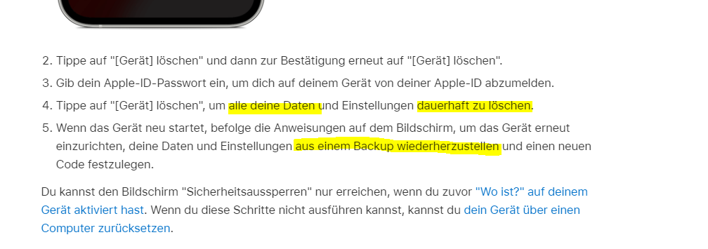
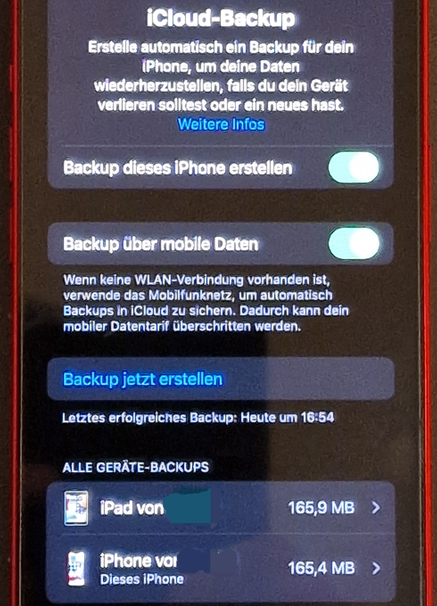

Leider kann ich mein iPhone nicht mehr entsperren. Es ist von mir durch Touch ID geschützt, doch dafür werde ich jetzt nach einem Code gefragt, den ich leider vergessen habe. Wende ich mich damit an den Apple Support - ist das ein "technisches Gerät"-Thema oder hier an Magenta, wißt ihr das eventuell? Danke im voraus und liebe Grüße !
Leider kann ich mein iPhone nicht mehr entsperren. Es ist von mir durch Touch ID geschützt, doch dafür werde ich jetzt nach einem Code gefragt, den ich leider vergessen habe. Wende ich mich damit an den Apple Support - ist das ein "technisches Gerät"-Thema oder hier an Magenta, wißt ihr das eventuell? Danke im voraus und liebe Grüße !
Sorry für diesen doppelten Beitrag. War ein Irrtum :-)
Hallo
@Gabi P
und willkommen in der Magenta Community,
Vielleicht hilft dir das weiter :
https://support.apple.com/de-at/HT204306
LG
Rexalius
Vielen Dank @Rexalius2000 - ja, das hilft schon, ein wenig ... weil über das hier (gelb angestrichen) trau ich mich nicht drüber

"...alle Daten dauerhaft ... löschen" und dann aus "einem" (welchem?) backup wiederherstellen klingt seltsam. Das ist mein Firmenmobiltelefon und wär gar nicht gut. Was meinst du ?
LG Gabi

Hey
@Gabi P
Wenn du nach einem Code gefragt wirst, würde dies eher Apple betreffen. Wenn du nach dem Pin der Sim-Karte gefragt wirst (falls aktiviert) würde dies ein Thema für Magenta sein.
Auf folgender Seite findest du den offiziellen Weg von Apple, um das iPhone zurückzusetzen, wenn der Code nicht bekannt ist. Dabei würden alle Daten am iPhone verloren gehen, außer du hast ein Backup auf einem Computer oder in der iCloud.
https://support.apple.com/de-at/HT204306
LG NTM
Als Backup wird eine regelmäßige Sicherung deiner Daten bezeichnet die im Hintergrund läuft(siehe Foto), mit diesem du dein iPhone nach der Löschung mit deiner Apple ID und dazugehörigen Passwort wieder neu herstellen kannst. Es kann aber durchaus sein, dass die Backup-Funktion deaktiviert wurde, speziell bei Firmen ist mir das immer mal wieder untergekommen, um sensible Daten zu schützen die nicht unbedingt auf Apple Server landen sollten
Normalerweise solltet ihr aber dazu einen Ansprechpartner in der Firma haben. Um keine wichtigen Daten/Einstellungen löschen, empfehle ich dir, mit diesem Kontakt aufzunehmen.

{kind=link}
{kind=link}